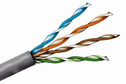

Cable UTP
El cable UTP (Unshielded Twisted Pair - Par Trenzado Sin Blindaje) es el cable más utilizado en redes locales (LAN) para conectar computadoras, impresoras, routers y otros dispositivos. Su bajo costo, facilidad de uso y buen rendimiento lo convierten en la opción ideal para la mayoría de las necesidades de conexión.
